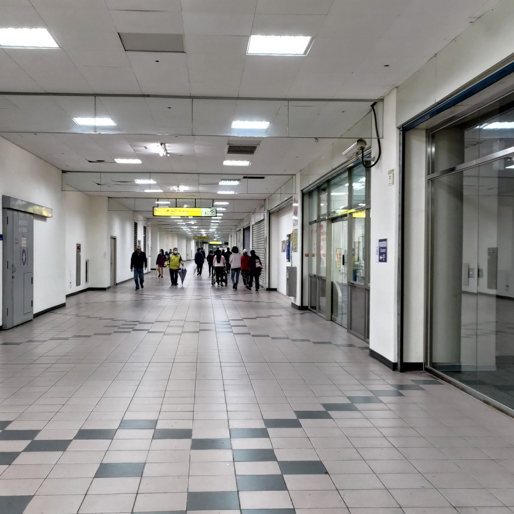

東西兩側的商店街
東側自早上早餐店營業到晚上限定營業時間內都點綴了各種人潮和燈光，還有便利商店與麵包店、服飾零售等商家，較為發達。

西側則是社區性質的空間居多，如桌球室、打鼓教室、宗教集會場所等，較少人會在經過時駐足。
汐止火車站 - 彷彿東升西落的兩個出口
東側自早上早餐店營業到晚上限定營業時間內都點綴了各種人潮和燈光，還有便利商店與麵包店、服飾零售等商家，較為發達。
西側則是社區性質的空間居多，如桌球室、打鼓教室、宗教集會場所等，較少人會在經過時駐足。
東側是白天夜間都有大量人潮的地方，除了顯眼的裝置藝術外，廣場設立許多椅子，是居民們從事各種休閒活動的場所。

西側相對下空曠，環境整潔也較差，除了黃昏時附近黃昏市場的人潮外，其他時段相較東側冷清許多。

從東側廣場向汐科路方向看，再過去便是人口密集的忠孝東路，除此之外，另一側的大同路更是汐止和台北市區之間唯一的主要幹道。
高架下新建的兒童遊樂場，目前已經開放使用，但我平時不常見到有家長會帶著孩子過來，當然，也有可能是活動時段錯開的問題。

西側外的黃昏市場是經規劃後改位置的，分為靠近車站的鮮食區以及較遠的熟食區，最近人潮減少，但疫情前有不少人會前來。

實際走往月台的路上會看見兩種截然不同的風景，火車站有前後兩個出口。但其實前後站是舊稱，從前站出去，也就是現在的東出口，左邊是大同路，右邊是汐科路，眼前第一時間看到的是一個特別的大型裝置藝術，其實我對它也是困惑非常久了，訪問了一些過路人卻也沒有人對他有所了解，根據網路上的資料，那是藝術家洪易的作品，雙面的人，一面是上班的站長 ，另一面是迎接先生下班的太太，旁邊還有一隻小狗。特別的是，站長的臉是一個時鐘的模樣，連供人休憩的各種椅子都是時鐘的設計，就像是車站每天日夜路過的每個繁忙的旅人緊湊的生活步調，充滿巧思的設計為東出口廣場添了一番風味，如果能在一旁加上說明和介紹的告示就更好了。
東出口的廣場一直是熱鬧的地方，從清晨時老人們的太極和法輪功，早上通勤的上班族、學生和為之服務的早餐店，中午下午群聚下棋聊天的爺爺奶奶們，到晚上的衣服、襪子、髮飾甚至水果的攤販(這似乎是違法的，我常常看到警察來驅趕這邊的攤販，最近警察更常來了)，在一些特別的時候，這裡還能看到附近國小的社團成果發表會和老人們的社區聯歡晚會。跨越信義路的鐵路高架橋下還有一個剛落成不久的兒童遊樂場，雖然我造訪的幾次都沒有太多的孩子和家長在，但上頭的圖畫和鐵路礦坑有關，很是有趣。

但西出口卻是完全不一樣的風景，連接秀峰路的西出口從途中的商店街到廣場一片冷清，地上還有一些檳榔和啃剩下的骨頭等等，我爸總是叫我注意晚上不要過去，因為那邊會有不少遊民，有時候甚至會聽到警車的聲音。西出口出去走一段路雖有汐止黃昏市場、汐止國民運動中心和秀峰高中等等，但相比出去之後充滿商家和行人的東出口，顯得沒有這麼發達。

當然火車站不僅僅有這兩個出口，在車站中庭，有兩個樓梯可以向下通到汐止火車站的停車場。停車場位在高架鐵路下方，給那些開車來的人一個停車的空間，但因為汐止車站的乘客多以通勤族為主，雖然是很大的停車場，但使用率並不高。